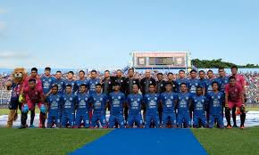

Arema FC (sebelumnya dikenal dengan nama Arema Cronus) adalah sebuah klub sepak bola profesional yang berasal dari Malang, Jawa Timur, Indonesia. Arema didirikan pada tanggal 11 Agustus 1987,[butuh rujukan] Arema mempunyai julukan "Singo Edan". Dalam Liga 1, Arema bermarkas di Stadion Kanjuruhan, Kabupaten Malang dan Stadion Gajayana, Kota Malang. Arema adalah tim sekota dari Persema Malang, Persekam Metro, Arema Indonesia dan Malang United.
